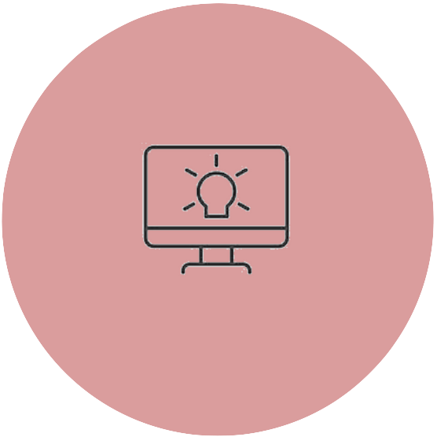
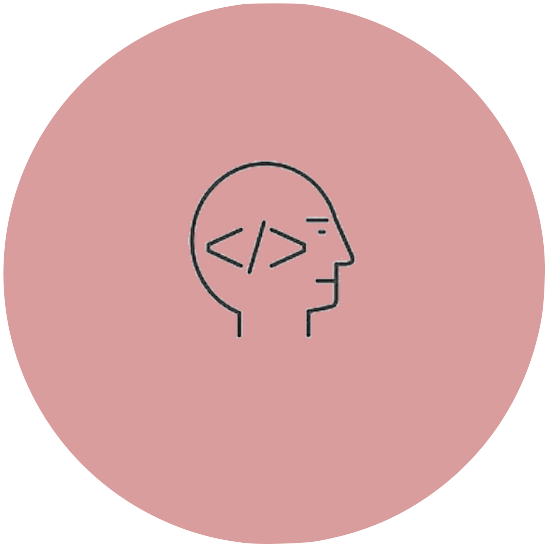
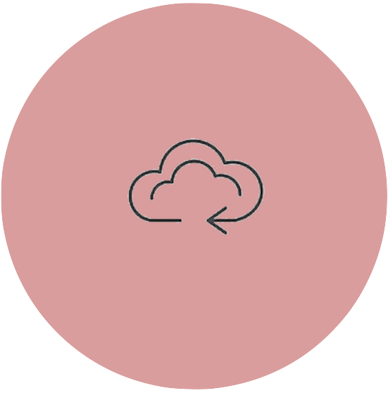
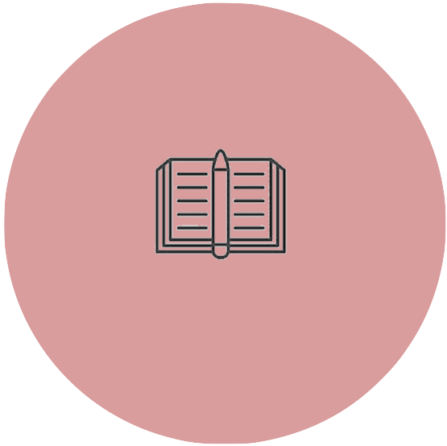

I'm a Computer Science and Statistics Major at UVA. I'm interested in learning more about artificial intelligence, machine learning, and the cloud. Recently, I've been fascinated with the intersection of finance and programming. I also love to read and listen to podcasts - check out what I've consumed below. Feel free to reach out!